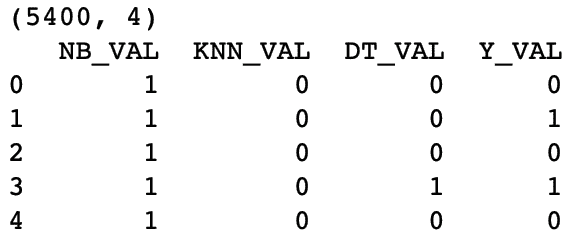
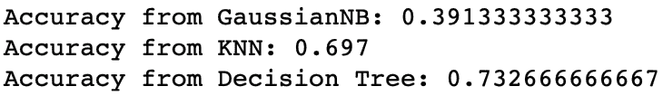

在本章中，我们将介绍以下配方:
本章的技术要求与我们在前面章节中详述的保持一致。
访问 GitHub 存储库，找到数据集和代码。数据集和代码文件是根据章节号和主题名排列的。
堆叠概括是一组不同模型的集合，它引入了元学习者的概念。元学习器是第二级机器学习算法，它从基础学习器的最佳组合中学习:
“堆叠概括是一种非线性组合概括器以形成新概括器的方法，试图以最佳方式整合每个原始概括器对学习集的看法。每个概化器要说的越多(不会重复其他概化器要说的)，得到的堆叠概化就越好。”
堆叠的步骤如下:
因为来自基础学习者的预测被混合在一起，所以堆叠也被称为混合。
下图给出了堆叠的概念表示:
来自基础学习器的预测彼此不相关，这对于栈泛化具有重要意义。为了从基础学习器获得不相关的预测，可以使用内部使用不同方法的算法来训练基础学习器。堆叠概括主要用于最小化基础学习者的概括错误，并且可以被视为交叉验证的精炼版本。它使用一种比交叉验证的赢家通吃方法更复杂的策略来组合来自基础学习者的预测。
在本节中，我们将了解如何从头开始实现堆叠综合。
我们将执行以下步骤开始:
在这个例子中，我们使用了一个来自 UCI ML 数据库的关于信用卡违约的数据集。该数据集包含信用卡客户的违约付款、人口统计因素、信用数据、付款历史和账单等信息。GitHub 中提供了数据和数据描述。
我们将从加载所需的库和读取数据集开始:
import os
import numpy as np
import pandas as pd
from sklearn.metrics import accuracy_score
我们将工作文件夹设置如下:
# Set your working directory according to your requirement
os.chdir(".../Chapter 8/")
os.getcwd()
现在让我们来读取数据。我们将以df_作为数据帧名称的前缀，以便于理解:
df_creditcarddata = pd.read_csv("UCI_Credit_Card.csv")
我们删除了ID列，因为这不是必需的:
df_creditcarddata = df_creditcarddata.drop("ID", axis= 1)
我们检查数据集的形状:
df_creditcarddata.shape
我们注意到数据集现在有 30，000 个观察值和 24 列。现在让我们继续训练我们的模型。
from sklearn.model_selection import train_test_split
X = df_creditdata.iloc[:,0:23]
Y = df_creditdata['default.payment.next.month']
# We first split the dataset into train and test subset
X_train, X_test, Y_train, Y_test = train_test_split(X, Y, test_size=0.1, random_state=1)
# Then we take the train subset and carve out a validation set from the same
X_train, X_val, Y_train, Y_val = train_test_split(X_train, Y_train, test_size=0.2, random_state=1)
# Dimensions for train subsets
print(X_train.shape)
print(Y_train.shape)
# Dimensions for validation subsets
print(X_val.shape)
print(Y_val.shape)
# Dimensions for test subsets
print(X_test.shape)
print(Y_test.shape)
# for the base learners
from sklearn.naive_bayes import GaussianNB
from sklearn.neighbors import KNeighborsClassifier
from sklearn.tree import DecisionTreeClassifier
# for the meta learner
from sklearn.linear_model import LogisticRegression
# The base learners
model_1 = GaussianNB()
model_2 = KNeighborsClassifier(n_neighbors=1)
model_3 = DecisionTreeClassifier()
# Now we train a list of models
base_learner_1 = model_1.fit(X_train, Y_train)
base_learner_2 = model_2.fit(X_train, Y_train)
base_learner_3 = model_3.fit(X_train, Y_train)
# We then use the models to make predictions on validation data
val_prediction_base_learner_1 = base_learner_1.predict(X_val)
val_prediction_base_learner_2 = base_learner_2.predict(X_val)
val_prediction_base_learner_3 = base_learner_3.predict(X_val)
# And then use the predictions to create a new stacked dataset
import numpy as np
prediction_test_stack = np.dstack([val_prediction_base_learner_1, val_prediction_base_learner_2, val_prediction_base_learner_3])
# Now we stack the actual outcomes i.e. Y_Test with the prediction_stack
final_train_stack = np.dstack([prediction_test_stack, Y_val])
stacked_train_dataframe = pd.DataFrame(final_train_stack[0,0:5400], columns='NB_VAL KNN_VAL DT_VAL Y_VAL'.split())
print(stacked_train_dataframe.shape)
print(stacked_train_dataframe.head(5))
在下图中，我们看到堆叠阵列现在有 5，400 个观察值和 4 列:

# Build the Mata-learner
meta_learner = LogisticRegression()
meta_learner_model = meta_learner.fit(stacked_train_dataframe.iloc[:,0:3], stacked_train_dataframe['Y_VAL'])
# Take the test data (new data)
# Apply the base learners on this new data to make predictions
# We now use the models to make predictions on the test data and create a new stacked dataset
test_prediction_base_learner_1 = base_learner_1.predict(X_test)
test_prediction_base_learner_2 = base_learner_2.predict(X_test)
test_prediction_base_learner_3 = base_learner_3.predict(X_test)
# Create the stacked data
final_test_stack = np.dstack([test_prediction_base_learner_1, test_prediction_base_learner_2, test_prediction_base_learner_3])
stacked_test_dataframe = pd.DataFrame(final_test_stack[0,0:3000], columns='NB_TEST KNN_TEST DT_TEST'.split())
print(stacked_test_dataframe.shape)
print(stacked_test_dataframe.head(5))
我们看到堆叠阵列现在有 3000 个观察值，在stacked_test_dataframe有 3 列:

test_prediction_base_learner_1 = base_learner_1.predict(X_test)
test_prediction_base_learner_2 = base_learner_2.predict(X_test)
test_prediction_base_learner_3 = base_learner_3.predict(X_test)
print("Accuracy from GaussianNB:", accuracy_score(Y_test, test_prediction_base_learner_1))
print("Accuracy from KNN:", accuracy_score(Y_test, test_prediction_base_learner_2))
print("Accuracy from Decision Tree:", accuracy_score(Y_test, test_prediction_base_learner_3))
我们注意到精度如下。请注意，基于采样策略和超参数，结果可能会有所不同:

test_predictions_meta_learner = meta_learner_model.predict(stacked_test_dataframe)
print("Accuracy from Meta Learner:", accuracy_score(Y_test, test_predictions_meta_learner))
我们看到元学习者在堆叠的测试数据上返回了下面的输出。这种准确性高于单个基础学习者:

在第一步中，我们将数据集分成目标和特征集。在步骤 2 中，我们创建了我们的训练、验证和测试子集。我们在步骤 3 中查看了每个子集的尺寸，以验证分割是否正确。
然后，我们继续构建我们的基础学习者和元学习者。在步骤 4 中，我们为基础学习者和元学习者导入了所需的库。对于基础学习者，我们使用高斯朴素贝叶斯、KNN 和决策树，而对于元学习者，我们使用逻辑回归。
在步骤 5 中，我们将基础学习者与我们的训练数据集相匹配。单个模型，包括高斯朴素贝叶斯、KNN 和决策树，在 0 级空间中建立。然后我们有了三个基本模型。
在步骤 6 中，我们在验证子集上使用这三个基础模型来预测目标变量。然后我们有三组由各自的基础学习者给出的预测。
现在，基础学习者将通过层叠概括在 1 级空间中通过逻辑回归被整合。在步骤 7 中，我们堆叠了三组预测值来创建一个数组。我们还将训练数据集的实际目标变量堆叠到数组中。然后，我们的数组中有四列:三列来自基础学习者的三组预测值，第四列来自我们的训练数据集的目标变量。我们称之为final_train_stack，即stacked_train_dataframe，我们根据基础学习者使用的算法来命名这些列。在我们的例子中，我们使用了名称NB_VAL、KNN_VAL和DT_VAL，因为我们分别使用了高斯朴素贝叶斯、KNN 和决策树分类器。因为基础学习者符合我们的验证子集，所以我们在列名后面加上了_VAL以使它们更容易理解。
在步骤 9 中，我们用逻辑回归构建了元学习器，并将其拟合到我们的堆叠数据集stacked_train_dataframe。请注意，我们从原始数据集转移到了堆叠数据集，其中包含来自基础学习者的预测值。
在步骤 10 中，我们使用测试子集上的基础模型来获得预测结果。我们称之为final_test_stack。在步骤 11 中，我们将final_test_stack数组转换为一个名为stacked_test_dataframe的数据帧。注意，在我们的stacked_test_dataframe中，我们只有三列，它们保存了应用于我们的测试子集的基础学习者返回的预测值。这三列以所使用的算法命名，后缀为_TEST，因此我们将NB_TEST、KNN_TEST和DT_TEST作为stacked_test_dataframe中的三列。
在步骤 12 中，我们在原始测试子集上检查了基础模型的准确性。高斯朴素贝叶斯、KNN 和决策树分类器模型分别给了我们 0.39、0.69 和 0.73 的准确率。
在步骤 13 中，我们检查了通过对我们的堆叠测试数据应用元学习者模型而获得的准确性。这给了我们 0.77 的准确率，我们可以看到，这比单个基础学习者要高。然而，请记住，简单地将更多的基础学习者添加到您的堆叠算法中并不能保证您会获得更好的准确性。
创建堆叠模型可能很繁琐。mlxtend库提供了简化构建堆叠模型的工具。它提供 StackingClassifier，这是用于堆叠的集成学习元分类器，它还提供 StackingCVClassifier，它使用交叉验证为第二级元学习器准备输入，以防止过拟合。
你可以从https://pypi.org/project/mlxtend/下载这个库或者使用pip install mlxtend命令来安装它。你可以在http://rasbt . github . io/mlx tend/user _ guide/classifier/stacking classifier/找到一些很棒的简单堆叠分类和带网格搜索的堆叠分类的例子。
也可以看一下ML-Ensemble库。要了解更多关于 T2 的信息，请访问 http://ml-ensemble.com/。https://bit.ly/2GFsxJN 有ML-Ensemble的使用指南。
H2O 是一个用于构建机器学习和预测分析模型的开源平台。算法是在 H2O 的分布式 map-reduce 框架上编写的。借助 H2O，数据可以跨节点分布，并行读取，并以压缩方式存储在内存中。这使得 H2O 速度极快。
H2O 的堆叠集成方法是一种用于监督问题的集成机器学习算法，该算法使用堆叠来寻找一组预测算法的最佳组合。H2O 的堆叠集成支持回归、二元分类和多类分类。
在这个例子中，我们将看看如何使用 H2O 的堆叠系综来建立一个堆叠模型。我们将使用 Github 中提供的银行营销数据集。
首先，从 H2O 导入h2o库和其他模块:
import h2o
from h2o.estimators.random_forest import H2ORandomForestEstimator
from h2o.estimators.gbm import H2OGradientBoostingEstimator
from h2o.estimators.glm import H2OGeneralizedLinearEstimator
from h2o.estimators.stackedensemble import H2OStackedEnsembleEstimator
from h2o.grid.grid_search import H2OGridSearch
使用init()函数初始化h2o实例:
h2o.init()
一旦我们运行了前面的代码，h2o实例被初始化，我们将看到下面的输出:

现在我们已经实例化了一个H2O实例，我们继续读取数据集并构建堆叠模型。
df_bankdata = h2o.import_file("bank-full.csv")
# split into train and validation sets
train, test = df_bankdata.split_frame(ratios = [.8], seed = 1234)
train.shape, test.shape
df_bankdata.head()
# Set the predictor names
predictors = train.columns
# Set the response column name
response = "y"
# Remove the 'y' variable from the predictors
predictors.remove(response)
print(predictors)
train[response] = train[response].asfactor()
test[response] = test[response].asfactor()
# Number of CV folds
nfolds = 5
# Using the `categorical_encoding` parameter
encoding = "OneHotExplicit"
# Train and cross-validate a GBM
base_learner_gbm = H2OGradientBoostingEstimator(distribution="bernoulli",\
ntrees=100,\
max_depth=5,\
min_rows=2,\
learn_rate=0.01,\
nfolds=nfolds,\
fold_assignment="Modulo",\
categorical_encoding = encoding,\
keep_cross_validation_predictions=True)
base_learner_gbm.train(x=predictors, y=response, training_frame=train)
# Train and cross-validate a RF
base_learner_rf = H2ORandomForestEstimator(ntrees=250,\
nfolds=nfolds,\
fold_assignment="Modulo",\
categorical_encoding = encoding,\
keep_cross_validation_predictions=True)
base_learner_rf.train(x=predictors, y=response, training_frame=train)
# Train and cross-validate a GLM
base_learner_glm = H2OGeneralizedLinearEstimator(family="binomial",\
model_id="GLM",\
lambda_search=True,\
nfolds = nfolds,\
fold_assignment = "Modulo",\
keep_cross_validation_predictions = True)
base_learner_glm.train(x = predictors, y = response,training_frame = train)
# Compare to base learner performance on the test set
gbm_test_performance = base_learner_gbm.model_performance(test)
rf_test_performance = base_learner_rf.model_performance(test)
glm_test_performance = base_learner_glm.model_performance(test)
print("Best AUC from the GBM", gbm_test_performance.auc())
print("Best AUC from the Random Forest", rf_test_performance.auc())
print("Best AUC from the GLM", glm_test_performance.auc())
baselearner_best_auc_test = max(gbm_test_performance.auc(), rf_test_performance.auc(), glm_test_performance.auc())
print("Best AUC from the base learners", baselearner_best_auc_test)
stack_auc_test = perf_stack_test.auc()
print("Best Base-learner Test AUC: ", baselearner_best_auc_test)
print("Ensemble Test AUC: ", stack_auc_test)
all_models = [base_learner_glm, base_learner_gbm, base_learner_rf]
# Set up Stacked Ensemble. Using Deep Learning as the meta learner
ensemble_deep = H2OStackedEnsembleEstimator(model_id ="stack_model_d", base_models = all_models, metalearner_algorithm = 'deeplearning')
ensemble_deep.train(y = response, training_frame = train)
# Eval ensemble performance on the test data
perf_stack_test = ensemble_deep.model_performance(test)
stack_auc_test = perf_stack_test.auc()
print("Ensemble_deep Test AUC: {0}".format(stack_auc_test))
在步骤 1 中，我们使用了h2o.import_file()函数来读取我们的数据集。
h2o.import_file()函数返回一个H2OFrame实例。
在步骤 2 中，我们将H2OFrame分成训练和测试子集。在步骤 3 中，我们检查了这些子集的尺寸，以验证我们的分割是否足以满足我们的要求。
在步骤 4 中，我们查看了前几行，以检查数据是否被正确加载。在步骤 5 中，我们分离出响应变量和预测变量的列名，在步骤 6 中，我们用asfactor()函数将响应变量转换成分类类型。
我们在步骤 7 中定义了一个名为nfolds的变量，用于交叉验证。我们还定义了一个变量encoding，我们在接下来的步骤中使用它来指示 H2O 对分类变量使用一键编码。在步骤 8 到步骤 10 中，我们构建了我们的基础学习者。
在步骤 11 中，我们训练了一个梯度推进机器模型。我们将一些值传递给几个超参数，如下所示:
nfolds:K 折交叉验证的折叠数。
在步骤 9 中，我们使用以下超参数训练了一个随机森林基学习者:ntrees、nfolds、fold_assignment。
在步骤 10 中，我们用 GLM 训练了我们的算法。注意，我们没有对 GLM 中的分类变量进行编码。
H2O 建议用户允许 GLM 处理分类列，因为它可以利用分类列获得更好的性能和有效的内存利用。
来自 H2o.ai:“我们强烈建议避免将任何级别的分类列一次性编码成许多二进制列，因为这是非常低效的。对于那些习惯于为其他框架手动扩展分类变量的 Python 用户来说尤其如此”。
在步骤 11 中，我们为每个基础学习者生成了测试 AUC 值，并打印了最佳 AUC。
在步骤 12 中，我们通过使用H2OStackedEnsembleEstimator组合基础学习器的输出来训练堆叠集成模型。我们在测试子集上使用了经过训练的集成模型。注意，默认情况下，GLM 被用作H2OStackedEnsembleEstimator的元学习者。然而，在我们的例子中，我们使用深度学习作为元学习者。
注意，我们已经为元学习者使用了默认的超参数值。我们可以用metalearner_params指定超参数值。metalearner_params选项允许您传入一个字典/超参数列表，用于作为元学习器的算法。
微调超参数可以提供更好的结果。
还有更多...
我们为网格指定随机森林超参数:
hyper_params = {"max_depth": [3, 4, 5, 8, 10],
"min_rows": [3,4,5,6,7,8,9,10],
"mtries": [10,15, 20],
"ntrees": [100,250,500, 750],
"sample_rate": [0.7, 0.8, 0.9, 1.0],
"col_sample_rate_per_tree": [0.5, 0.6, 0.7, 0.8, 0.9, 1.0]}
search_criteria = {"strategy": "RandomDiscrete", "max_models": 3, "seed": 1}
# Train the grid
grid = H2OGridSearch(model=H2ORandomForestEstimator(nfolds=nfolds,\
fold_assignment="Modulo",\
keep_cross_validation_predictions=True),\
hyper_params=hyper_params,\
search_criteria=search_criteria,\
grid_id="rf_grid_binomial")
grid.train(x=predictors, y=response, training_frame=train)
我们使用随机森林网格来训练集合:
# Train a stacked ensemble using the RF grid
ensemble = H2OStackedEnsembleEstimator(model_id="ensemble_rf_grid_binomial_9", base_models=grid.model_ids)
ensemble.train(x=predictors, y=response, training_frame=train)
# Evaluate ensemble performance on the test data
perf_stack_test = ensemble.model_performance(test)
# Compare to base learner performance on the test set
baselearner_best_auc_test = max([h2o.get_model(model).model_performance(test_data=test).auc() for model in grid.model_ids])
stack_auc_test = perf_stack_test.auc()
print("Best Base-learner Test AUC: ", baselearner_best_auc_test)
print("Ensemble Test AUC: ", stack_auc_test)
balance_classes:该选项可用于平衡等级分布。启用后，H2O 将对多数类进行欠采样或对少数类进行过采样。如果启用该选项，您也可以为class_sampling_factors和max_after_balance_size选项指定一个值。
让我们想想 StackNet 是如何工作的。在神经网络的情况下，将一层的输出作为输入插入到下一层，并应用激活函数，如 sigmoid、tanh 或 relu。类似地，在 StackNet 的情况下，激活函数可以用任何受监督的机器学习算法来代替。
堆叠元件可以在两种模式下运行:正常堆叠模式和重新堆叠模式。在正常堆叠模式下，每一层都使用前一层的预测。在重新堆叠模式的情况下，每一层使用前一层的神经元和激活。
使用 StackNet 的示例代码由以下步骤组成:
导入所需的库(注意，我们已经从pystacknet库导入了StackNetClassifier和StackNetRegressor):
import numpy as np
# import required libraries from sklearn
from sklearn.tree import DecisionTreeClassifier
from sklearn.ensemble import RandomForestClassifier, GradientBoostingClassifier
from sklearn.linear_model import LogisticRegression
from sklearn.metrics import roc_auc_score, log_loss
from sklearn.model_selection import StratifiedKFold
# import StackNetClassifier and StackNetRegressor from pystacknet
from pystacknet.pystacknet import StackNetClassifier,StackNetRegressor
from pystacknet.metrics import rmse,mae
我们读取数据，删除ID列，并检查数据集的维度:
df_creditcarddata = pd.read_csv("UCI_Credit_Card.csv")
#dropping the ID column, as it would not be required
df_creditcarddata.drop(["ID"],axis=1,inplace=True)
# Check the shape of the data
df_creditcarddata.shape
#create the predictor & target set
X = df_creditcarddata.iloc[:,0:23]
Y = df_creditcarddata['default.payment.next.month']
# Create train & test sets
X_train, X_test, Y_train, Y_test = \
train_test_split(X, Y, test_size=0.20, random_state=1)
models=[[DecisionTreeClassifier(criterion="entropy", max_depth=5, max_features=0.5, random_state=1),
GradientBoostingClassifier(n_estimators=100, learning_rate=0.1, max_depth=5, max_features=0.5, random_state=1),
LogisticRegression(random_state=1)],
[RandomForestClassifier (n_estimators=500, criterion="entropy", max_depth=5, max_features=0.5, random_state=1)]]
model=StackNetClassifier(models, metric="accuracy", folds=4, restacking=False, use_retraining=True, use_proba=True, random_state=12345, n_jobs=1, verbose=1)
model.fit(X_train,Y_train )
# Uses the meta-learner model to predict the outcome
preds=model.predict_proba(X_test)[:,1]
print ("TEST ACCURACY without RESTACKING, auc %f " % (roc_auc_score(Y_test,preds)))
对于restacking=True，StackNetClassifier将使用重新堆叠模式来构建模型。
在 Kaggle，有各种 StackNet 用于赢得比赛的案例研究。如何使用StackNet的示例可在https://bit.ly/2T7339y获得。
There are various case studies of StackNet being used in winning competitions in Kaggle. An example of how StackNet can be used is available at https://bit.ly/2T7339y.